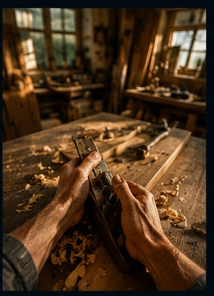
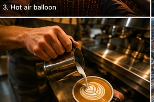

02 — La vision
Découvrir des personnes par ce qu'elles font
Le Live existe déjà, mais il reste une fonctionnalité parmi d'autres, organisée autour de créateurs déjà connus. Vuvio part de ce que les gens font réellement : un artisan dans son atelier, un cycliste dans les Alpes, un guide à Tokyo, un chef en plein service.
Activité : le point d'entrée, pour découvrir un créateur sans le connaître à l'avance.
Point de vue (POV) : les gestes, l'environnement et les imprévus, au moment où l'activité a lieu.
Géographie : le Globe pour explorer des activités dans d'autres villes, régions ou pays.



03 — L'usage
Découvrir, partager, suivre, revenir

REGARDER
Entrer dans l'atelier d'un artisan, suivre un service en cuisine, accompagner un guide, explorer une activité dans un autre pays.

PARTAGER
Sportif, guide, artisan, musicien, cuisinier ou voyageur partage en direct, sans vidéo montée, et bâtit une communauté.

PARTENAIRES
Équipement, lieux, événements, tourisme, culture : une présence utile, cohérente avec l'activité et clairement identifiable.
Depuis Watch, Explore ou le Globe.
L'activité et la personne.
Un créateur.
04 — Le produit
Six fonctionnalités pour découvrir,
explorer et partager
Watch
Entrer dans un Live en cours.
Globe
Zoomer sur une région et trouver des Lives que la recherche n'aurait pas montrés.
Explore
Catégories, métiers, passions, créateurs, lieux, activités à proximité.
Profil
Activités, équipement, Lives passés et à venir.
Replay & Recap
Prolonger certaines expériences.
Start Live
Préparer, cadrer, démarrer.